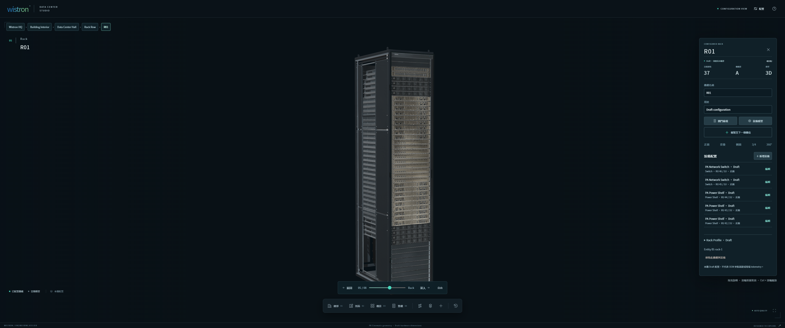
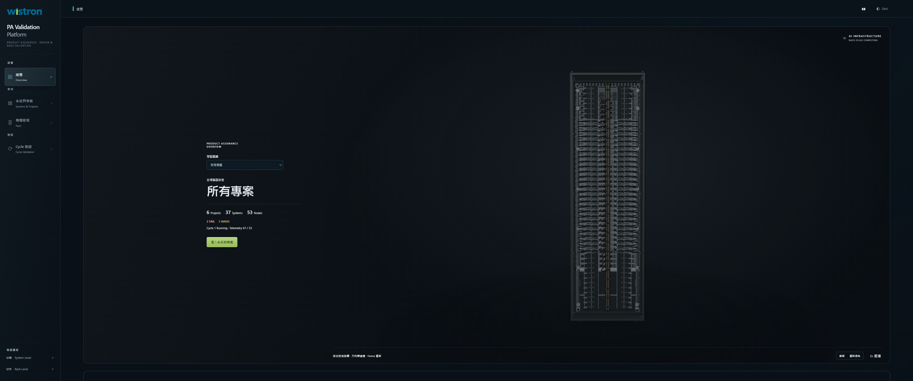
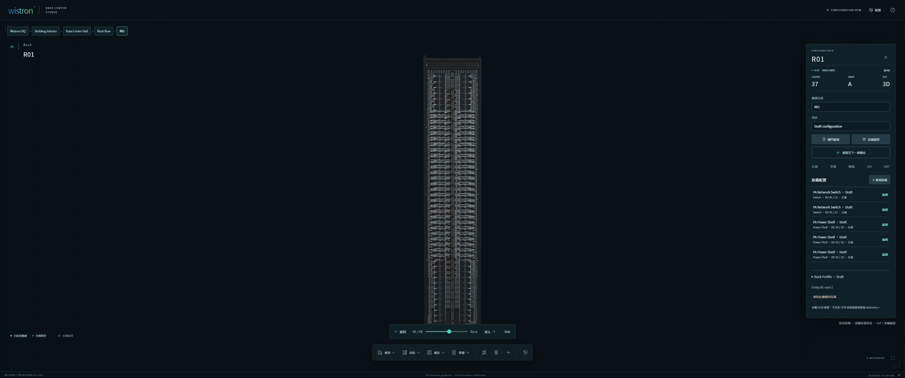
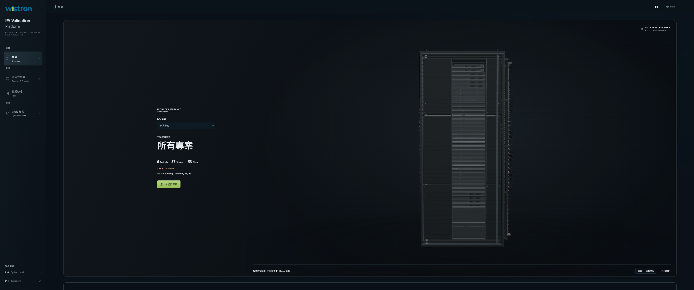
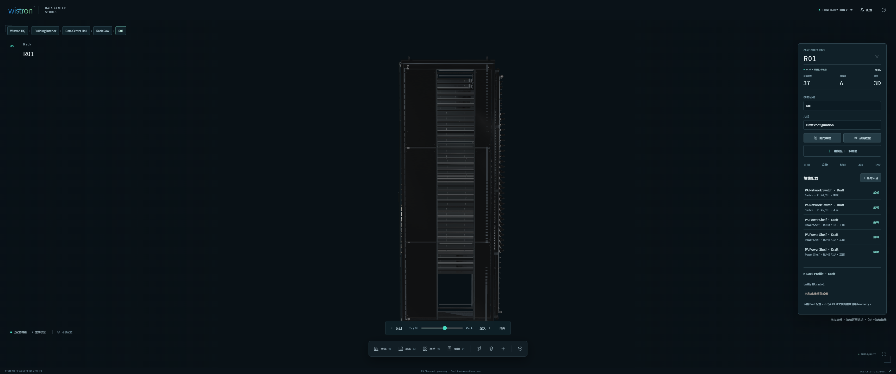
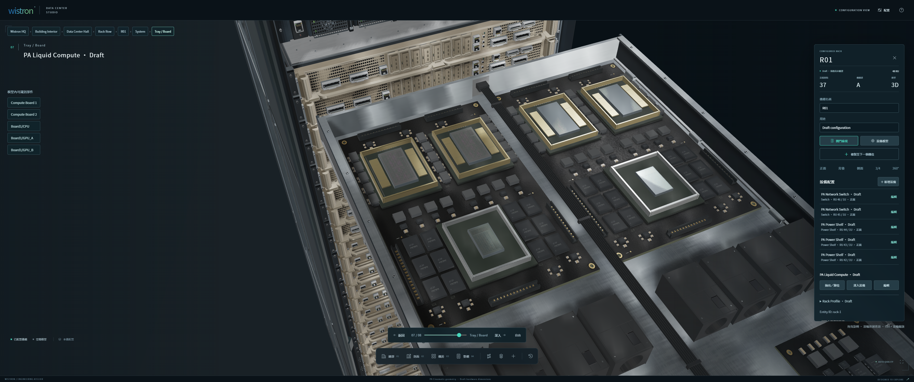
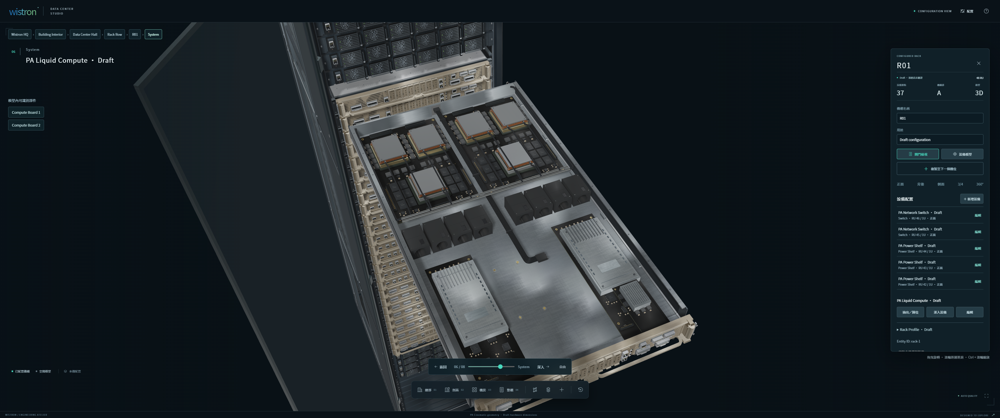
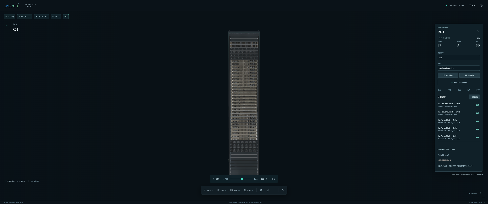
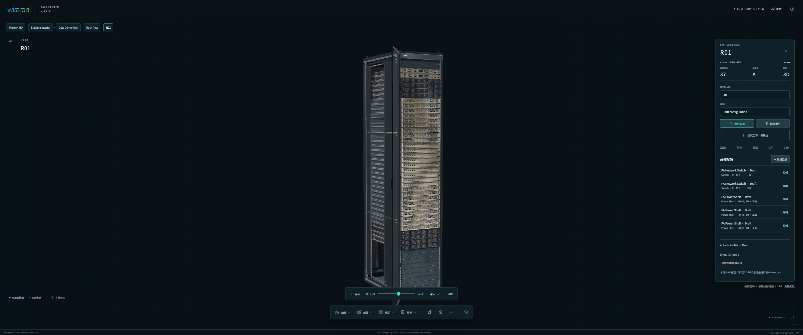

PA Cycle Lab → Wistron Digital Twin V2
同一組精細 Rack 幾何、原始 fragment shader、配對 GLB 與 HDR 環境資產，在現有 Three.js 工作台中整合。點選影像可開啟原始解析度。
左側為既有上游截圖，右側為本次實際畫面。兩邊的攝影機構圖、UI 與 canvas 區域不同，不能當成同鏡頭逐像素測試。本次畫面不是生成影像；硬體尺寸是 Draft，建築與機房維持既有概念模型。
完整機櫃 / 3⁄4



背面 / Rear




側面 / Side




主機板與封裝 / Board



液冷組件 / Cooling



正面與開門




完整 Cinematic 播放
原始 39.7 秒時間軸加上起始鏡頭銜接。錄影 viewport 為 3440×1440，編碼為 1720×720。冷卻流動是原模型的概念流路視覺化，非 CFD 或 telemetry。